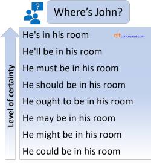
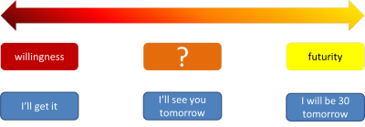
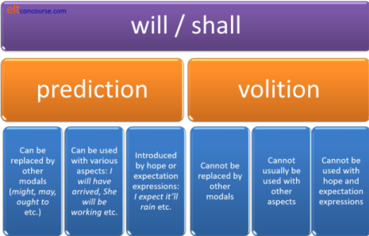
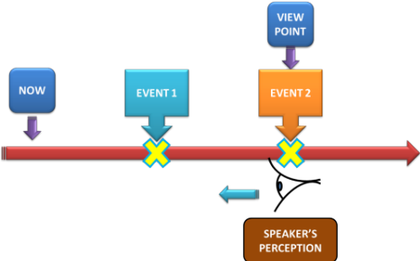

Talking about future time

If you have arrived here in expectation of encountering either
the going to formulation, as in
I am going to see the
movie
or the present tense used for the future, as in, e.g.:
I am taking Mary to the cinema tomorrow
you will not be
wholly
disappointed but both those forms are also discussed under
present time because that is where
they arguably belong.
English uses a number of strategies to apply aspect to future time. Unfortunately, it also employs a lot of modality and pseudo-modality so that will be considered here first before we get along to aspect.
 |
Uncertainty and modality |
Modality occurs primarily because the future is, by definition,
uncertain.
If we are certain of something, present tenses are commonly used as
in, for example, in answer to
Where's John?
the response is:
He's in his room.
then the speaker is demonstrating certainty about a current
situation.
If, on the other hand, the response is:
He'll be in his room.
then, although the speaker is expressing that she is almost certain
of the truth of what she says, there is an implication that John
may, in fact, not be in his room. In fact, responses like
these are very often softened with the addition of a comment clause
such as
I expect.
The fact that will can express this near-but-not-absolute certainty
explains much of its use as an auxiliary verb to refer to the future.
Other modal auxiliary verbs can also express varying levels of certainty,
especially if they are stressed or otherwise marked for importance
(writing conventions such as underlining, hand gestures etc.).
There is, in fact a cline from the simple statement of fact to the
expression of a good deal of uncertainty in an answer to
Where's John?
which can be arranged in ascending order of
certainty, like this:

and if we add other modifications such as
... I think
... I imagine
... I reckon
... I expect
... I'm sure
... for sure
... certainly ...
... I assume
and so on, the subtleties multiply.
When we are using modality to express futurity rather than
current likelihood similar considerations apply. So for
example:

It is, in other words, almost impossible to disentangle concepts of futurity from modality, particularly epistemic modality which refers to the speaker's view of the truth or likelihood of truth of a proposition. But we'll try.
We should not, incidentally, be at all surprised that the future
in English is often expressed via a modal auxiliary verb. It
can be argued that modal auxiliary verbs are, so to speak, tensed
insofar as they frequently refer to the future without any marking
to show the tense. That's why, for example all the following
can refer to the future:
She could come here
They may be leaving
I might ask a question
I must by there
I can see her
We ought to go
I have to work
and so on.
Into all those sentences we can insert a simple time adverbial, such
as tomorrow, later, soon etc. and the sentences immediately
and unequivocally refer to future time. The modal auxiliary
will is no different in this respect.
 |
will (and shall) |
| Will you marry me? |
The simple auxiliary verb will causes serious problems for learners and some of them are traceable to the fact that the verb is polysemous and used in two main allied but different meanings in English. Once they are distinguished, much becomes clearer.
 |
A little history |
The word will derives from the Old English wyllan which
meant, among other things, wish, desire, be willing to.
It also meant be about to and it is probably thence we derive
its use as a future time marker.
The past tense was wolde (now would), incidentally.
There are cognate words in most Germanic languages, e.g.,
wollen in German which means wish or want
(to) and is not a future tense marker (that's werden,
which also, confusingly, means become). The
first-person singular form of the verb in German is will.
Other Germanic language such as Dutch (ik wil), Danish (jeg
vil), Swedish (jag vill) etc.
The problems arise when learners assume (or, unforgivably, are told) it is
only a future form
marker in English whereas it is, in fact, commonly a
signal of
willingness or volition rather than futurity. (A further small
complication is that there is a transitive verb in English, to
will, which means something like to bring about by exercise
of willpower and another which refers to leaving things to
other people).
Some examples may help.
| Example | Comment | Use of will |
| Will you marry me? | does not require the responder to speculate about future events. The verb is not being used to denote future time at all. It denotes something like Are you willing to ... and that's a very different thing. The question is about the present not the future. | volition |
| Are you going to marry me? | is enquiring about current plans and that is not mostly about the future. It is primarily about current intention. | volition allied to futurity |
| Will she marry him? | denotes either: Do you think the future will contain her marrying him? (please speculate about the future) or Do you think she is willing to marry him? (please speculate about her present state of mind) |
futurity or volition |
| What will he do if she won't marry him? | Usually, we are told that the
so-called first conditional only contains one instance of
will. That's correct when the verb is used
with reference to future time. However, in this case
she won't marry him refers to volition not futurity
so two instances of will are allowable. Compare it to What will he do if she doesn't marry him? which clearly has reference to the future and only one instance of will is needed. |
volition and futurity |
The two meanings are not always easily separable. For example:

The problem in the middle lies with the intention of the speaker. It may be a prediction about the future based on sound evidence, it may, less usually, be a spontaneous decision or it may, as is more common, be an expression of willingness or a commitment:
| A: | Can we talk about this? | This refers to right now. |
| B: | I can't now. I'll talk to you tomorrow, if you like. | And so does this. The speaker is expressing a current inability and a current willingness. |
| A: | OK. I'll try to come in early. Goodnight. | And this. The speaker is expressing a current willingness, or promising. |
| B: | Goodnight. We'll talk tomorrow. | Now the speaker is referring the
future per se and not willingness but certainty.
If the speaker had said: I expect we'll talk tomorrow then the sense of likelihood is diminished as it would be with other modal auxiliary verbs such as may, might, could etc. |
The distinction is important because the intrinsic meaning of an
expression of willingness (which is a present reference) has to be
separated from the extrinsic meaning of inevitability concerning
future events (which is a proper future reference).
There is, rather obviously, some sense of reference to the future in
something like I'll do the cooking this evening but the key
here is to understand that the speaker is referring primarily to
present volition (i.e., volunteering or committing) rather than the future event which
may, or may not, actually occur.
Like this:
| I'm on the train and I'll be in London by six. |
This expresses an inevitable, timetabled future. The speakers willingness or intentions are simply not relevant. |
| If you will get that in the post, it will be there tomorrow. |
Two separate uses: |
| It'll be cold in Canada at this time of year. |
This is a simple prediction based
on climatic knowledge and has nothing to do with anyone's
wishes or disposition. It is a true future form. |
| Stop that! I won't tell you again |
This is also an expression of current willingness (negatively). It may, obliquely, refer to the future but the speaker's intention is to express a current emotional state. |
Naturally, because we more rarely make commitments for other
people, the volitional aspect of the auxiliary verb is most evident
in the first person so expressions such as:
I'll do the work
I won't help you
and
We'll be happy to come
are most likely to be interpreted as expressing willingness (or its
lack) rather
than referring solely to the future.
Negative volition can be used in other persons more frequently so we
get, e.g.:
Won't she help? (=Is she unwilling
to help?)
They won't come to work (=They are
unwilling to come to work)
and neither of those are about the future. The reference is to
their current volitional state of mind.
By the same token,
You'll be pleased to see them
You'll do most of the work
and
You'll walk there, I guess
are most likely to be interpreted as proper future references or
predictions because we do not conventionally control other people's
willingness. The addition of a comment clause, as in the last
example with I guess reinforces the nature of the statement
as a prediction, not an expression of willingness.
That is, however, not always the case because we do sometimes
delegate to a third person or command the second person so, for
example:
My secretary will do the work
can be interpreted both ways, as an expression of my secretary's willingness
or ability to
do the work (volition) or as a prediction concerning who
will do the work.
Equally,
You will not do that again!
can be interpreted as volition (on my part) forbidding you to do it
again or as a prediction concerning your behaviour.
Slightly more technically, the distinction between the two central meanings of will can be understood as distinct forms of modality:
- epistemic modality refers to the likelihood or otherwise of
an event, state or proposition being true in fact. For
example:
I'm sure he'll be very pleased to hear that
The verb will carries very strong epistemic modality (i.e., the speaker believes the proposition to be true) as can be seen if we contrast
He will have passed the examination
with
He ought to have passed the examination
In the first case, it is not possible to insert
... but he didn't
after the clause but in the second case, it is. This means the first case refers to the absolute truth of a proposition.
The modal nature of will is revealed when one considers the kinds of verbal processes with which it occurs. These are almost invariably mental processes concerning the belief in the truth of something. We get, therefore:
I'm afraid he'll be unhelpful
I believe she'll come alone
I doubt if it'll rain
I expect she'll be here
I'm sure they'll help
I feel certain she'll be there by now
I know he'll take the train
I hope she'll marry me
I suppose it'll be OK
I think he'll fail
I reckon we'll be late
all of which express varying levels of certainty but, because the future is, by definition, unknown, epistemic modality comes into play. - dynamic modality refers to ability or willingness on the
part of the speaker. For example:
I'll tell her (if you like)
I'll help with that
both refer to the speaker's willingness.
The dynamic modality of the verb is also revealed by the verbal processes with which is associated. They are almost invariably behavioural ones and the verb expresses requests or invitations (and is nothing to do with the future). We get, therefore:
Will you manage alone for a moment?
Won't you stay a little longer?
Will you do that for me?
etc. - deontic modality refers to obligation or prohibition so for
example:
My father will take us to school
implies that the speaker will somehow oblige the father to act and
You will speak to your teacher more politely
suggests that you are being obliged to do something.
In neither case are we speaking solely about futurity because the obligation comes before the action.
A subcategory of deontic modality is known as commissive modality and refers to a self-imposed duty. The use of will (and would) commonly expresses this form of obligation as in, e.g.:
I will call you as soon as I arrive
I told her I would call her as soon as I arrived
etc.
 |
So, what's the problem? |
The problem is that not distinguishing between the meanings of will results in error – teacher-induced error. Most course materials (and hundreds of websites) assert that the use of will to express a disposition or promise to do something is a simple future form, often dressed up as something called spontaneous decision or a similarly silly expression. It is not. It is about one's current (i.e., present) state of mind. Worse, the admonition in many materials is to slide from the volitional use of the verb to a future form of will to an expression of current plans and the use of going to.
Take a simple and often-used telephone dialogue such as:
| A: | I don't think there's any wine in the house. |
| B: | Isn't there? Oh, I'll go and get some. |
Students are asked to believe that the second speaker's statement refers to
the future and is an example of a spontaneous decision. It doesn't
and isn't – it refers
to the speaker's current willingness or a promise to do something.
It may result in a future
action but that is not the point at all. This is a commitment
and, as we saw above, is a deontic modal use called commissive modality
(because the speaker is committing to an action).
If the conversation develops like this:
| A: | Don't bother, I'll get some on the way home. |
| B: | Will you have time? |
Then students realise that the future isn't going to happen.
It wasn't a future use, anyway.
They are now faced with two completely different uses of will.
The first expresses volunteering (now) and the second is a question
that really is about the future. You can easily see
that:
Will you have time?
has nothing to do with willingness because none of us can control
time, however willing we are.
On the other hand,
Will you make time?
actually does refer to willingness because we all labour under the
impression that we can do such a thing.
And it gets worse if
the dialogue goes on something like:
| A: | Yes, no problem. I'm going to leave a bit early so I'll be there before they shut. |
| B: | Fine. I expect John'll bring a bottle, too. |
in which we now have an expression of a present plan, a prediction about travel times and another prediction about the future based on the speaker's knowledge of John's character and habits.
 |
This gets even worse |
If the materials do not alert learners to the types of verbal
processes which are associated with the modal use of will,
then they induce errors of comprehension and appropriacy.
For example, a dialogue such as:
| A: | I expect she'll be here soon. |
| B: | Will she bring the papers with her? |
| A: | I hope she will |
| B: | Will you clear the desk for her? |
contains three different uses of the auxiliary verb
- I expect she'll be here soon
and
I hope she will
express epistemic modality concerning the truth of a proposition. We saw above that this use is very common with mental process verbs such as think, believe, feel sure, hope etc. That is the use in A's first and second statements. The use of a comment clause (with expect and hope) concerns the level of certainty the speaker feels. - Will she bring the paper with her?
refers to a real future: B's response is clearly concerned with future time and is asking for A's prediction. - Will you clear the desk for her?
is an unconnected use. It is a request for action on A's part (and the form is also often used for invitation) and has nothing to do with futurity or likelihood. It concerns dynamic modality and refers to A's willingness to do something or make a commitment.
It is little wonder that learners get confused if the uses and meanings are jumbled up like this.
 |
A simple way to understand will |
A straightforward way to understand the difference between
will as a modal auxiliary and will as a tense-forming
auxiliary is to compare it to the verb have.
For example, in:
I have seen the boss
the verb have is acting as a primary auxiliary, forming a
perfect tense of the verb see. No problem, but in:
I have to see my boss
the verb is clearly a modal auxiliary and expresses a sense of
obligation (deontic modality, technically).
The verb will can be analysed in the same way. So, in:
The train will arrive at platform 6
we have an example of will acting to form a tense and
it can be considered a primary auxiliary verb but in:
I will marry you if you will give up drinking
the verb is modal insofar as it denotes the speaker's current
willingness and that is the job of modal auxiliary verbs.
 |
shall is obsolete, right? |
A further source of teacher-induced error is the assumption that it is not necessary to deal with shall at all because will has taken over and the verb has fallen / is falling into disuse. That's not a bad rule of thumb but it is worth noticing some issues.
- derivation and meaning
- the verb shall is derived from a different source from will. The base sense is actually connected to the idea of obligation and cognate verbs in other languages retain the sense of shall as should or ought to. Compare sollen in German, for example. The use to speak about the future is comparatively recent and comparatively rare.
- polysemy
- the verb shall displays the same polysemy as
will and can carry the sense of pure prediction, e.g.,
I shall be in New York at 8 if the plane's on time
and volition:
Shall I help you with that?
The use in questions, which is still quite common, is almost always to do with disposition, readiness or willingness and carries no future predictive sense:
Where shall we go? (= Where do we want [now] to go?)
I shan't! (= I refuse [now])
Where shall I put this? (= Where should I [now] put this?) - obligation
- the verb retains its sense of obligation in often legalese
statements like
The property owner shall ensure ...
etc. and also in
They shan't talk to me like that.
In this sense, the verb usually has nothing to do with the future. It expresses obligation and obligation routinely refers to both present and future time. Compare, e.g.,
We mustn't be late
which can refer to present time or the future depending on context.
There is a formal use for all persons of shall in, e.g.
You shall not interrupt
They shall not pass
etc. - commissive modality
- a rarer (and rarely taught) use of shall is in what
is known as commissive modality in which the speaker / writer
creates a self-imposed duty (so it is a sub-category of deontic
modality). In BrE, this is often realised through the use
of shall in expressions such as:
You shall have the money by Thursday
although in spoken language the contracted form ('ll) disguises the use of shall and many believe it is a use of will. The modal auxiliary verb will is often used in this way but also expresses volition or willingness:
I'll give you money on Thursday
 |
Alternative modal auxiliary verbs |
There are separate
guides on this site to all the modal
auxiliary verbs and
semi-modal auxiliary verbs (new tab) in English so this is not a place to repeat what's said
there.
We use a range of modal auxiliaries to replace will but only
when the use really is about the future. We do
not replace the
use of will to express volition, willingness or promises with other modal
auxiliary verbs, except shall and would:
| I'll be in London by six. | Could be replaced with, e.g. I may be in London by six. I might be in London by six. I should be in London by six. I ought to be in London by six. because the sense is of a more-or-less certain future. However, as was stated above, the verb will carries much stronger epistemic modality (i.e., certainty) than the other modal auxiliary verbs do. |
| I'll buy some wine, if you like. | Because this is the use of will
to express willingness, we can't have: *I may buy some wine, if you like. *I might buy some wine, if you like. *I should buy some wine, if you like. *I ought to buy some wine, if you like. |
This is more evidence that we should keep the meanings quite separate when we are teaching. Not to do so will confuse and bewilder.
 |
Hope and expectation |
When will is used to refer to the future rather than to volition, it is frequently preceded by a verb or phrase denoting some kind of hope or expectation, for example,
- I expect she'll be in trouble.
- I hope I'll get a rise.
- I imagine he'll be tired.
- I'm certain he'll be first.
- It's a given fact that he'll be late.
- There's a strong possibility she'll get lost.
These are all indicators that the verb is really being used to
refer to future time and not to volition. In fact, the
situation may be and often is wholly outside the control of the
speaker.
Other verbal indicators of this sort were listed above and included:
be afraid
believe
feel certain
know
doubt (if)
suppose
reckon
expect
think
be sure
all of which are mental verbal processes occurring conventionally in
comment clauses about the future.
These introductory expressions always refer to the speaker's view of the likelihood of the future event or state. If will concerns volition or making promises (much the same thing), the expressions change the sense to pure futurity:
| Comment on the present | Volition, promises and willingness | Future reference and prediction |
| You are late again! | I'm sorry, it won't happen again. | I'm sorry, I'm sure it won't happen again. |
| We've run out of sugar. | I'll borrow some from next door. | *?I hope I'll borrow some from next door. |
Note that in the second exchange, the reference to prediction
sounds at best very strange, at worst wrong, because the verb is
being used to express willingness and cannot easily be dragooned
into a future reference. It could be changed to:
I hope I'll be able to borrow some from next
door
which refers to an uncertain future ability.
 |
Absolute future forms |
There is an unusual but quite simple form in English which does
unequivocally refer to the future either seen from now or in the
past and unfulfilled. Here are some examples:
There is to be a meeting tomorrow
There was to be a meeting the next day but too many people
were off work
We are to meet again after lunch
I was to have painted the house but ran out
of time and money
etc.
The form refers either to a firm arrangement already made or to one
made and then unfulfilled for a reason (which is conventionally
supplied).
An allied form, discussed in the guide to the infinitive is the
sense of absolute prohibition or obligation contained in notices and
commands from those in authority such as:
Children are not to leave the premises
unaccompanied
Passengers are not to proceed beyond this point
Officers are to be in uniform at all time
Desks are to be kept tidy
This door is to be kept clear of obstructions
and none refers to futurity. All of these express strong
deontic modality concerning current externally
imposed obligations. The forms cannot be used for commissive
modality because even:
I am to keep my desk tidy
does not represent the speaker's commitment to do something
but the strength of an imposed obligation.
 |
Summary and classroom issuesThis matters in the classroom. |

If learners are encouraged to believe that will is merely a
future marker, do not be surprised if they produce errors and sound
certain or tentative about the future rather than willing to do
something. There is a clear difference between:
I'm sure it won't happen again.
which refers to the speakers current certainty about the future,
and
I'm sorry. It won't happen again.
which refers to a current promise or undertaking
and between
I ought to be there at six.
which can refer to an obligation (a duty to be there) or an unsure
expectation concerning the future,
and
I'll be there at six. Promise.
which refers to a promise or commitment (hence the term
commissive modality to refer to this).
The other teaching aspect to focus on is the type of verbal processes which are involved in the main uses of the auxiliary verb.
- When we are talking about likelihood
- the most frequent verbal processes are mental so we get
I expect it'll be OK
I feel sure she'll be late
etc. - When we are talking about volition or willingness
- the most common verbal processes are behavioural
I won't tell you again
She won't drive at night
etc.
Focusing on verbal process types can be very helpful.
 |
Aspect |
Now that we have dispensed with will to express present
volition, we
can focus on its use for the future in terms of adding aspect.
(In none of what follows does
will express volition and that is another reason for
keeping the concepts separate.)
 |
Simple |
| The next train arrives in 3 minutes |
Using a simple form like this to refer to the future is, slightly
misleadingly, called the 'timetabled' future. It might be
better described as the certain future because it is closely allied
to the use of a simple present tense to refer to predictable facts
as in, e.g.
It snows heavily in The Alps in winter
Of course, the form includes timetables but it also covers events that
we are sure of because they are tied to other ever-present
background events. Snow, in common with other weather events,
cannot be timetabled.
For example:
- Look busy, the boss arrives in a minute
(i.e., we are talking about the future but basing the certainty on habitual background behaviour) - I arrive at around 6 if all's well
i.e., this is my future but under the control of someone else's timetable. Compare it to
I'm driving up and will get to you around 6
in which the simple use is not possible so we cannot have
*I'm driving up and get to you around 6
because it is a personal prediction not tied to external timetables.
In both cases above, the simple tense can be replaced with a
will formulation, either in simple or progressive aspects (will
arrive / will be arriving) with no change in meaning. No
other modal, except the first-person shall, can be
used without changing the meaning. The reverse does not
usually apply:
we cannot always insert a simple tense form instead of a formulation
with will / shall. The following are not acceptable
transformations:
I'll talk to you tomorrow ≠ *I talk to you
tomorrow
because the reference is to willingness, not futurity.
She'll be here later ≠ *She is here later
because the reference is to modality concerning likely, not
absolutely certain, futurity.
The following are acceptable transformations because they do concern
certainty futurity:
The train will arrive in a minute = The train
arrives in a minute
The boss gets here soon = The boss will get here soon
because the sense of pure futurity is maintained in both
formulations.
 |
Will vs. going to |
|
It's going to be a lovely day It'll be hot, though |
The marginal modal auxiliary verb going to is analysed
on this site as a present tense with future aspect because it is
most often used that way to state that there is present evidence for
a future event, as in:
I think it's going to rain
or present intent for a future action, as in:
I'm going to talk to the boss.
In some analyses, however, it makes sense to include going to
as a future form because it concerns prediction based not on what
one perceives now (such as rain clouds) or on what one intends now
but on prediction substantiated.
For example, in:
She's going to be furious when she finds out
a speaker is making a prediction based not on present intention or
present evidence but on what she / he knows about the person in
question. That can, of course, also be interpreted as present
evidence because the speaker's knowledge of the subject is current.
In this analysis, there are two forms of prediction:
substantiated and unsubstantiated.
Substantiated prediction involves the use of going to and
unsubstantiated prediction involves the use of will so, the
theory goes, we have a contrast between:
He'll be at home this evening
and
He's going to be at home this evening
and the assertion is that the former is unsubstantiated and the
latter substantiated by current knowledge of the situation.
Unfortunately, neat though the concept seems, it doesn't always work
because:
- We often use will for prediction based on current
substantiated facts so we get, for example:
I'm on the train now so I'll be there around 6
which cannot be classed as an unsubstantiated prediction because of the speaker's obvious understanding of a current fact. - We can use going to in exactly the same way, for
example:
The train's been delayed so I'm going to be late
and that, too, is substantiated prediction and nothing to do with intention. - We can use going to to make unsubstantiated
predictions as in, for example:
I wonder if she's going to come
where the speaker has admitted to having no substantiated facts to work on. - Again, we can use will in the same way:
I wonder if she'll come - There is a cline from substantiated to unsubstantiated with
many intermediate levels of certainty and here we are in the
realm of epistemic modality (the speaker's view of the truth of
a proposition). So, for example:
He's going to be here shortly, he's just parking his car
He'll be here shortly, he's just parking his car
which are both substantiated predictions based on a current situation.
He will be here soon
which is an expression of certainty based on something unsaid but influential.
He might be here soon
which is an expression of uncertainty
He must be here soon
which is probably an expression of great certainty (because of knowledge of other facts) but might also, of course, be an expression of obligation. - The verb will and the expression going to
are interchangeable when there is some substantiation so we can
have either:
He'll be here shortly, he's just parking his car
or
He's going to be here shortly, he's just parking his car
with no discernible difference in meaning.
And this can also imply a prediction based on current evidence as in, e.g.:
It'll rain in a minute. Look at those clouds
vs.:
It's going to rain in a minute. Look at those clouds.
Because the differentiation between substantiated vs.
unsubstantiated prediction is so difficult to make and because the
two forms can so often be used interchangeably, it is not a useful
classroom tactic to make this difference at all.
However, if one reserves will for prediction and going
to for a present situation or intention with a prospective
aspect, as the analysis on this site has it, one is on safer ground
and the distinctions become more intuitive (and production more
accurate as a result).
The next section expands on this idea.
 |
The prospective nature of the to-infinitive |
There is a simple and alternative way to look at the going to
structure.
The to-infinitive in English often betokens some sort of
prospective aspect as we see in, e.g.:
I want to visit Margate next week
I intend to take the train
I mean to stay a night or two
I would like to see you when I'm there
I hope to visit the new museum
I aim to come back next Thursday
I plan to see my brother
I expect to find him at home
and so on. In all these cases, the first verb denotes a state
which precedes the action or event denoted by the second verb in the
to-infinitive form. In other words, the to-infinitive
signals a prospective event.
We can, if we get away from calling it the going to
structure, view the verb go in the same way. The only
difference then is that the verb is conventionally used in the
progressive form.
Even in this case, most of the verbs in our example apart, arguably,
from want, mean and expect, can also be used
progressively as in:
I'm planning to see my brother
I'm aiming to come back next Thursday
and so on.
The verb phrase would like, of course, cannot be used
progressively because modal auxiliary verbs are always finite and
have no infinitive or participle forms.
This analysis is not universally accepted and course books and
grammars for learners are firmly wedded to calling the going to
structure a future form. It isn't really; it's the verb go
followed by a to-infinitive.
Bleaching or grammaticalisation |
It is worth a small diversion here to consider why, in the first
place, we use will and going to to refer to future
time.
Neither verb form has a long history of their current use as
auxiliary verbs because they were both once simple lexical verbs.
- will
- We saw above that will derives from an earlier verb
which meant something akin to the modern verb want and,
indeed, the cognate verb in German and other Germanic languages
still carries this sense:
Ich will das Geld
Ik wil het geld
Jeg vil have pengene
Jag vill ha pengarna
Ég vil hafa peningana
in German, Dutch, Danish, Swedish and Icelandic, respectively all translate as
I want the money
and are not future forms at all - In Modern English, the verb still carries this sense in some
circumstances as in, for example:
Help yourself to what you will (= ... what you want)
Will you have some more coffee? (= Do you want ...)
etc.
The use of the verb as an auxiliary to refer to the future was already developing in Old English but not fixed until the 9th century. - going to
- This verb still retains its initial meaning of travel
or move as in:
We are going to the cinema
and is often used to signal current actions, arrangements or intentions.
The use of going to + bare infinitive to signal a future of some kind was not, however, established until the 15th century at roughly the end of the period described as Middle English.
The pronunciation often betrays the use of the verb. When it is a future marker, it is often pronounced weakly (and sometimes spelled gonna) as /ˈɡənə/ but the lexical form is not weakened, retaining the full pronunciation as /ˈɡəʊɪŋ/.
You cannot transcribe
We are going to the cinema
as:
/wi.ə.ˈɡənə.ðə.ˈsɪ.nə.mə/
but you can transcribe
I am going to go to the cinema
as:
/ˈaɪ.əm.ˈɡənə.ɡəʊ.tə.ðə.ˈsɪ.nə.mə/
In both these cases, what has occurred is bleaching. The lexical meaning of the verb has, so to speak, been bleached out of the lexeme, leaving it functioning only as a grammatical form with no intrinsic meaning. An alternative way to describe this feature (which is common to many languages) is as grammaticalisation.
 |
The present progressive vs. will and going to |
|
It's going to be a lovely day It'll be hot, though |
The traditional analysis of the present progressive used to refer
to the future is that it signals an arrangement rather than
volition, an intention or a prediction. That
is not wholly without merit but its use for the future can only be
understood from previous or current events or states.
In other words, the use of the tense can only be discovered by reference to actions or states at a
time before the future (now or in the past).
It is sometimes said, with reason, that when discussing plans and
arrangements we use the present progressive form, when we make
predictions we use will and when we refer
to
intentions we use the going to structure. However, the
forms are, in fact much more fluid than the simple difference
suggests. Functionally, there is little distinction between
the meanings of the forms, so:
He's taking a holiday next week
carries the same meaning as
He's going to take a holiday next week
and
He'll be on holiday next week
and
I'm going to see my mother on Monday
and
I'm seeing my mother on Sunday
and
I'll see my mother on Sunday
are also virtually indistinguishable.
There are times, however, when the forms are not interchangeable or when ambiguity needs to be avoided. In many of the cases below, the present progressive form is not allowed but an alternative exists either with the use of going to or in the form of the will future.
- Semantic disqualification

With some verbs, arrangement is semantically possible. For example, we can have:
I'm turning up at my mother's party on Sunday
and
I am going to turn up at my mother's party on Sunday
and
I'll turn up at my mother's party on Sunday
with little difference, if any, in meaning.
But, if the meaning of the verb specifically excludes any possibility of an agreed arrangement then the progressive form is not possible so we can have:
I am going to surprise my mother by turning up at her party on Sunday
and
I'll surprise my mother by turning up at her party on Sunday
but not:
*I am surprising my mother by turning up at her party on Sunday
because, semantically, you cannot arrange to be surprised, astonished, excited, disappointed, flabbergasted, bewildered etc. All these sorts of participle adjectives and verbs are disqualified from appearing with the be + -ing form, therefore.
They can all be used, quite naturally with both going to and the will future. - Avoiding ambiguity

The progressive form, in order to avoid ambiguity, usually needs to be accompanied by a time adverbial unless the context makes the future nature of the current plan clear. So, for example, we can have:
I'm going to drive to London
and
I'll drive to London
without context and the future sense is still clear.
However,
I'm driving to London
without any context is ambiguous and could mean:
I'm driving to London as we speak
I'm planning / have arranged to drive to London
or even
It is my current, temporary habit to drive to London (rather than use an alternative form of transport).
If the context does not clarify the situation, we need to insert a time adverbial to disambiguate what we are saying so, e.g.:
I'm driving to London in the morning
or
I'm driving to London soon
are not ambiguous even without context because of the prepositional phrase adverbial or the adverb respectively.
We do not need to insert a time adverbial when the context has already provided the temporal information so:
A: Can you come in early tomorrow?
B: Sorry. I'm taking the kids to school
is coherent. - Stative vs. Dynamic verb uses

The going to formulation and the will future can be used with verbs used statively so we allow, e.g.:
He's going to be angry when he gets the news
She's going to look wonderful at tonight's party
They are going to seem out of place in that company
He'll be angry when he gets the news
She'll look wonderful at tonight's party
They'll seem out of place in that company
we do not allow the progressive forms:
*He is being angry when he gets the news
*She's looking wonderful at tonight's party
*They are seeming out of place in that company
if the reference is to the future.
All three forms can be used with verbs used dynamically, only going to and will are used statively. - Inanimate subjects

We do not ascribe the ability to plan or form arrangements to inanimate objects so we allow, e.g.:
Look out! The ladder's going to slip in a minute
but not:
Look out! *The ladder's slipping in a minute.
The reason that:
The ladder'll slip in a minute
is not common (although it is possible) is twofold:
Firstly, will, as we have seen, is commonly used for current volition and ladders do not have volition.
Secondly, the going to formulation is often preferred for imminent events (as is the marginal modal auxiliary verb be about to).
This distinction is most noticeable when we are talking about the weather. Because it is inanimate, the weather is spoken about as:
It's going to rain tomorrow
or, with great certainty
It'll rain tomorrow
but not as
It's raining tomorrow.
This distinction is sometimes confused with the idea that the progressive form for the concept needs to refer to a personal arrangement. That is a defensible point of view but focuses through the wrong end of the telescope. It is the nature of participants (in this case the subject) which determines the appropriate form to use. - Present evidence

Only going to and, slightly less commonly will can be used to refer to present evidence leading to a future event. So we allow:
It's making her angry. She's going to lose her temper soon
and
It's making her angry. She'll lose her temper soon
but not
It's making her angry. *She's losing her temper soon
Again, the present evidence rule applies when talking about inanimate objects such as the weather when present evidence is important so we get, for example:
Look at the clouds. It's going to rain soon
and
Look at the clouds. It'll rain soon
but not
Look at the clouds. *It's raining soon.
In both these cases, the will future is an acceptable alternative to going to. - Negative forms

The equivalence of the will formulation and the going to structure is even more marked when the negative uses are considered. For example:
It's a lovely day and I'm sure it's not going to rain
can be rendered as:
It's a lovely day and I'm sure it won't rain
with no significant change in meaning.
This equivalence is maintained even for human subjects so, for example:
I'm not going to be at the meeting
and
I won't be to the meeting
are functionally equivalent.
Both negative forms can also carry the sense of refusal rather than prediction so, e.g.:
I won't explain it again
is indistinguishable in meaning from
I'm not going to explain it again. - Past experience

Prospective events based on past experience are also only realised through going to or will. For example, we allow:
When your father hears, he's going to laugh
and
When your father hears, he'll laugh
but not
*When your father hears, he's laughing
even though the future reference is clear.
Again, past experience of weather conditions often makes the form suitable for that, too. For example:
It's going to snow a lot in Canada in January
and
It'll snow a lot in Canada in January
not
*It is snowing a lot in Canada in January - Conditional and contingent clauses

This is another semantic (or pragmatic) issue. For example, we allow:
If the trains aren't running, I'm going to drive
and it is a conditional expressing the fact that the speaker does not yet know if the trains will be running.
And,
If the trains aren't running, I'll drive
also expresses the fact that the speaker does not yet know whether the trains will run or not and is speculating.
However,
If the trains aren't running, I'm driving
does not have the same sense because it implies that the speaker already knows the trains are not running so has formed a plan or arrangement to drive. It could be realised as
As the trains aren't running, I'm driving. - Modal auxiliary verbs

Because most modal auxiliary verbs are defective in English and do not exhibit the full range of forms that lexical verbs do, there are severe limitations on the ways they can be used with will, the going to or the be + -ing structure.- Deontic modality refers to duty or
obligation and we allow, e.g.:
I am going to have to talk to her
I will have to talk to her
and we also allow
I am having to talk to her
but the last of these refers to present rather than future obligation and
?I am having to attend a meeting tomorrow
is questionable.
Other expressions of this form of modality are rendered in the present with modal auxiliary verbs such as should and ought to.
There are no equivalent forms using either of these structures so, e.g.:
*He is going to ought to tell her
*The are shoulding do it
are not available.
Other languages allow future forms of equivalent modal auxiliary verbs and learners may be surprised to find that English does not. In fact, these deontic modal auxiliary verbs are used interchangeably in English to refer to present and future obligation as in, e.g.:
I should smoke less
I should talk to him
I ought to be better at this
I ought to tell her
etc. - Epistemic modality refers to
possibility and likelihood and these are again not expressed with
these structures so, e.g.:
*He is going to ought to be there by now
or
*She is shoulding be there soon
are not possible.
Both these future meanings are expressed using the same form for present and future time as in, e.g.:
She should be here before six tomorrow
They ought to arrive soon
It ought to work
It should be possible now
etc. - Alethic modality refers to the general
truth of a proposition and is usually timeless so present
forms are used and we cannot have, e.g.:
*A square is going to have to have four sides
*A square will have four sides
or
*A square is having to have four sides.
However, we do allow:
A dodecahedron will have twelve sides
because that is actually an example of a deduction from knowledge of Greek numbers and epistemic not alethic. - Dynamic modality refers to the
individual's capabilities, as in, e.g.
I can see the point
etc.
The going to formulation and will are both available for some forms of dynamic modality to refer to a present ability realised in the future so we allow, e.g.:
He is going to be able to help later
He'll be able to help later
but we do not allow, e.g.:
*He is being able to help later
so the be + -ing form is not available to refer to current ability realised in the future.
- Deontic modality refers to duty or
obligation and we allow, e.g.:
- Arrangements

This is a marginal difference and more a tendency than a rule. By their nature, arrangements are made between people but intentions can be formed individually and only later communicated to others. Most English speakers will prefer, therefore:
All of us are meeting at the restaurant in the square tomorrow
to
All of us are going to meet at the restaurant in the square tomorrow
or
All of us'll meet at the restaurant in the square tomorrow
although all are possible with little effect on meaning.
However, in an exchange such as:
A: Are you writing to the boss about this?
B: No. I'm going to talk to her face to face.
then the second speaker has only now communicated a pre-formed intention and, as we have seen, this can also be rendered as:
B: No, I'll talk to her face to face
If the second speaker had said:
B: No. I'm meeting her face to face.
then the meaning is that the speaker and the boss have reached an agreement to meet.
It is sometimes averred, by some who should know better, that the be + -ing form implies an arrangement between people. It does, sometimes, but it is perfectly possible to use the form with the sense of only one person's intention. For example:
I'm giving John a lift to Margate tomorrow
does imply an arrangement between the speaker and John which, note, has already been made but:
I'm driving to Margate tomorrow
implies no arrangement with anyone else at all.
However, see above for the functional equivalence of the forms when used in negative sentences. - Person

In particular, when the subject of the verb is first-person plural an arrangement will be assumed, whichever form is taken so, to all intents and purposes:
We are meeting in the station
and
We are going to meet in the station
are synonymous because of the plural first-person pronoun.
Equally,
John and I are going to meet at the station
and
John and I are meeting at the station
are synonymous.
 |
Prospective aspect triggered by past events |
It is possible that the event or state which triggers the
future may even be in the past, omitting any reference to the
present altogether as in, e.g.:
We talked it over and we're going to emigrate.
We had a long chat and are moving in together.
which are both examples of a perfective past simple resulting
in a current prospective event.
The prospective present can also be combined with the perfect
as in, e.g.:
It has been agreed that I am driving
It has been agreed that I'm going to drive.
In the last case, we have a perfective action (completed) couched
in perfect form and followed by a prospective aspect in a present
tense (and either form is acceptable).
 |
Progressive, continuous, durative, iterative and habitual aspects in the future |
|
He will be walking in the
mountains and he will enjoy the solitude |
The progressive aspect is not the same as the continuous.
| The meaning I want to convey | Form of choice | Aspect |
| I want to say that an action will be in progress | She will be having dinner around
now so don't call till 8 the form is often used to avoid interruption |
progressive |
| I want to say that an action will be in progress discontinuously | She will be giving a series of
lectures but not all the time |
|
| I want to say that a state will exist | He'll be feeling quite disappointed | continuous |
| He'll feel quite disappointed | ||
| I want to say that a state of mind will exist | She'll think you're mad but not forever |
|
| I want to say that an action will become a routine | I'll be travelling by train
until the car's fixed but then I won't |
durative |
| I'll travel by train until the
car's fixed less common |
||
| I want to say that an action may not be happening continuously but will repeat | They'll be sending money every
week but not all the time |
iterative |
| They'll send money every week not only once |
||
| I want to say something will become a habit | I'll take all my holiday in
France in future it will be an unbroken habit |
habitual |
| I'll be taking all my holidays in
France in future it will be an unbroken habit |
- Simple forms with certain types of verbal processes are
still continuous in aspect. This is the effect of stative and dynamic use and is not
parallelled in many languages.
- mental processes such as enjoy, appreciate, love,
feel, know, understand
So, for example:
He'll love a long holiday
refers to a continuous future state. - projecting processes such as hope,
expect, imagine, suspect
So, for example:
I'll expect you around 6
refers to a continuous future state and could also be phrased, with no change in meaning, as:
I'll be expecting you around 6 - verbal processes such as say, aver, assert, describe,
explain
So, for example:
At the meeting I'll describe and explain the plan in detail
refers to a progressive action and could be re-phrased with no change in meaning as:
At the meeting I'll be describing and explaining the plan in detail.
- mental processes such as enjoy, appreciate, love,
feel, know, understand
- Both the simple and complex forms of the tense can be used
for iterative, durative and habitual aspects but not for
progressive or continuous aspects unless the verb denotes one of
the processes mentioned in point 1.
We can say
He'll go to the office at nine every day (iterative)
or
He'll take the train for a month instead of the bus (durative)
but not
*He'll have lunch so don't phone now (progressive) - The volitional use of will does not occur
in these aspects so, for example:
I'll be taking the train
only refers to the future, whereas, e.g.:
I'll take the train tomorrow
could mean:
I am now willing to take the train tomorrow (so, say, you can have the car)
or
I predict that this is my mode of transport tomorrow (and is a future tense form) - The progressive form often refers to what is known as
the future as a matter of course and signals
that the speaker is aware of a routine event and what it
affects. For example:
The London express will be passing through in a moment so stand back from the edge
They'll be having lunch about now so I'll call later
and in these examples, the speaker is aware of the timetable or people's habits. - The comments made in the general guide to aspect and tense
apply here, too, concerning the distinction between durative
verbs which are progressive in nature such as play, read, rain
etc. and punctual or momentary verbs such as hit, bang, drop
etc. which, when used with a progressive form, imply repeated
(i.e., iterative) aspect.
So, for example:
She'll be studying French
is a progressive form but
She'll be banging the drum
is an iterative aspect.
By the same token,
?She'll be breaking the glass
makes no sense unless you believe that a glass can be broken more than once but
She'll be breaking the glasses
does make some sense because it can be seen as iterative, not progressive.
This is a semantic rather than a grammatical issue.
For more on punctual vs. durative forms, see the introductory guide in this section to time, tense, and aspect. It's the link at the end.
Perfect aspect in the future |
|
|
They will have been married for 50 years next week |
The perfect always refers one time to another.
It is a relational not an absolute time reference.
The functional way to see the tense is as the past set in the future
as the time lines show.
The future perfect allows people to express how a future will look from
a viewpoint later in the future. It is, in other words, a
reference to the past within the future.
Timelines are a helpful way
to explain a sentence such as:
She will have made the point clear (EVENT 1) so every will understand (EVENT 2).

Both Events 1 and 2 are clearly in the future (they come to the
right of NOW) but from the point of view of Event 2, Event 1 is in
the past. That's why we refer to it as the past within the
future.
The problem
There is one very obvious difficulty with the two perfect aspect
future tenses: the verb forms do not match the time to which they
refer. If we take, for example:
I will have finished it by the time you need
it
we can see that the first verb phrase, will have finished,
is clearly a future form of some sort but the second verb phrase is
simply need and that looks like a present form. It is
logical to assume that it should be will need and that is
what many learners are tempted to say. Many languages do
signal the time in this way and in that sense are more logically and
intuitively constructed.
This happens to be the way that tense forms work in dependent
clauses in English and is a source of a great deal of error.
There is a guide on the site to
tenses in dependent clauses that you can access here (new tab).
For example:
| The meaning I want to convey | Form of choice | Aspect |
| I want to say that a future event began in the future's past will continue | I will
have worked on it for hours and will continue to do so |
perfect |
| I want to say that a finished past-in-the-future event will result in a change to the next event | He
will have arrived by then so we'll be able to start |
perfect |
| I want to say that a future past event (recent or not) will result in a future state | I will
have spent all my money so I'll be broke |
perfect |
perfect +
We can combine the perfect aspect with a continuous, progressive,
iterative, habitual or durative aspect and for this purpose, we will
choose a different form. All the following retain the sense of the perfect
aspect, i.e., the relation of the future to a previous future but have
an additional aspect grafted on to them. The
sense of the past within the future is maintained.
For example:
| The meaning I want to convey | Form of choice | Aspect |
| I want to say that a previous future state will remain a current future state | I
will have been living there for over 10 years and I intend to continue |
perfect + continuous |
| I want to say that a future ongoing action will still be still occurring | I will have been playing in the
band for over a year and will still play in the band |
perfect + progressive |
| I want to say that a future series of events will go on | They
will have been coming here every Sunday for years by then and will go on doing that |
perfect + iterative |
| I want to say that a future routine will go on | I will
have been visiting France for over 20 years and it will remain my habit to do so |
perfect + habitual |
| I want to say that a future, long-lasting action will continue | I will
have been sitting here for most of the day and will continue to do so thereafter |
perfect + durative |
Speakers will often choose a prepositional phrase (circumstance, if you prefer) introduced by by in both the perfect forms.
 |
Perfect progressive aspect in the future |
A number of considerations apply concerning whether the use of the progressive perfect is allowable or conventional.
 |
Activity vs. Achievement |
We can use both tenses to refer to a past within a future so we
can say either:
He will have climbed the mountain
or
He will have been climbing the mountain
but in the first we are emphasising his achievement (i.e., the
outcome of his efforts) and in the second, the activity itself
(i.e., the efforts themselves).
The first verb use is telic (it has a clear end point) but the
second is atelic (with no end point in sight).
Another example may make things clearer.
- achievement or outcome
- If we say, too:
I will have finished my university course in a year
we are suggesting that it is the outcome of the activity or the achievement which carries the relevance to another future event, such as, for example, applying for work, going on to other studies and so on. - activity or effort
- If, in contrast, we say:
I will have been studying here for three years by then
we are emphasising that the activity and explaining what it is that the activity has involved.
Semantic considerations
- verb meaning and achievement
- Some verbs contain within their meaning the sense of
achievement or outcome.
If, for example, we say:
She will have succeeded
the use of the verb succeed usually prohibits the progressive form so we do not encounter:
*She will have been succeeding
because the verb itself refers to achievement not activity.
Equally, we do not find:
*They will have been accomplishing it
*She will have been concluding it
and so on for similar reasons.
With verbs which imply any kind of achievement, the use of the progressive form is simply unnecessary (and usually wrong). - verb meaning and stative or dynamic use
- The shorthand for this distinction is to think of stative
and dynamic verbs and that is how it is often presented to
learners. A better way to consider it is to look at the
meaning of a verb and ask whether its use in this
meaning is stative or dynamic.
For example:
By the end of the presentation, I hope they will have thought it is worth the time to do this
is the use of the verb think to mean believe but:
She will have been thinking about the problem for weeks
is the use of the verb to mean deliberate or cogitate.
The rule is that when a verb is used statively, the progressive form is unacceptable.
It follows logically that verbs which are very firmly tied to a state rather than an action, such as own, seem, look like, possess, believe, suppose etc. will not appear in the progressive form.
Other verbs, which are polysemous and can be used in both forms with a change in meaning include have, consider, think, appear, imagine, judge, look, occur etc. and may appear in either simple or progressive structures depending on the meaning intended. - adverbials and time / event markers
- The distinction is clear here, too.
We can say, for example:
I will have flown across the Atlantic four times
They will have run six marathons
and so on because we are focused on the achievement or outcome of the actions.
Using the same forms with the progressive makes no sense because the focus of the progressive is on the efforts or activities, not the outcomes so we do not find:
*I will have been flying across the Atlantic four times
*They will have been running six marathons
 |
Telicity |
As is the case with most tense forms in English, telicity plays
an important role. For example:
The house will have been built
is telic because we are clearly stating the building work is
finished, but:
The house will have been being built
is atelic because the end point of the building is not implied.
This is clearer when a prepositional time phrase is included:
The house will have been built
in a year
is telic and the end point is explicit
The house will have been being built
for a
year
is atelic because there is no explicit end point in sight.
 |
Aspects |
The future perfect tenses, both simple and progressive are described as
having a perfect aspect and by that it is meant that the tenses
refer in some way to the past within the future.
This is true but the progressive form is also use to describe two
other aspects which are not obvious by looking at the forms.
- Iterative
- This aspect refers to events or actions which are repeated,
and that is what iteration means. For example:
John will have telephoned his wife so she will know the news
implies a single past event set in the future to show its relevance to that future (that his wife will know something).
However:
John will have been telephoning his wife
implies a series of events of the same kind. The sense is still of a past within the future but in this case we are concerned to show that the event is repeated so the form of choice is future perfect progressive (although it might be better referred to as future perfect iterative). - Durative
- This aspect refers to events or actions which take a
substantial time. We are emphasising, then, the duration
of the event or action. For example:
John will have lived in London for many years
simply states a fact and sets the event in a future context so, for example, John will be a good person to ask about the city.
However:
John will have been living in London for many years
means roughly the same but the speaker's emphasis is on the duration of the event, not the event itself. Past relevance within the future is maintained.
It makes sense, of course, to handle these distinctions piecemeal with learners rather than expecting them to absorb all this in a single sitting.
Take a short test to see if you can match future aspect to meaning.